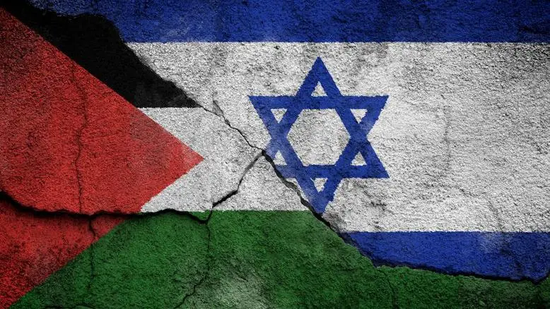

Décimo Oitavo Artigo da Declaração dos Direito Humanos
Artigo 18: Toda pessoa tem direito a liberdade de religião, consciência e pensamento.
Este direito está sendo garantido pelos Estados?
Conflito Israel-Hamas: De onde vêm as interpretações religiosas para a guerra?
O que leva a um ponto oficialmente alegado pelo grupo Hamas como justificativa para os primeiros ataques a Israel: o que o grupo diz ser uma suposta “profanação” da mesquita de Al-Aqsa, localizada em uma colina no coração da cidade velha de Jerusalém.
Ilustrações
Fonte:https://www.em.com.br/internacional/2024/01/6786368-guerra-israel-hamas-completa-cem-dias-sob-risco-de-maior-escalada.html
Fonte:https://www.correiobraziliense.com.br/mundo/2023/11/6054746-guerra-israel-hamas-tropas-israelenses-cercam-a-cidade-de-gaza.html
Fonte:https://www.cnnbrasil.com.br/internacional/guerra-entre-israel-e-palestinos-ja-deixou-ao-menos-10-mil-mortos-mostra-levantamento/
Mas afinal, é uma guerra religiosa?
Fonte:https://www.apostagem.com.br/2023/10/08/governo-se-reune-para-debater-posicionamento-do-brasil-no-conflito-entre-israel-e-palestina/
Mas a atual guerra pode ser chamada de religiosa? Moraes e Mendonça dizem que sim. Já o historiador, hebraísta e rabino Theo Hotz pede mais cuidado.
Moraes diz: "É uma guerra religiosa. É uma guerra maniqueísta, onde cada um dos lados se considera representante do bem, cada um se considera imbuído de uma missão de seu deus e, portanto, neste pacote da missão está [a necessidade de] ocupar a terra e eliminar aquele que impede ou que é um obstáculo à sua liberdade religiosa, à sua existência".
Mas o teólogo complementa: a religião não é a única motivação. "Há outros elementos: econômicos, políticos, sociais. Mas a fagulha, aquilo que alimenta inicialmente, que enche os homens de sentimentos nobres de martírio, de darem suas vidas em nome de uma causa, esse sentimento é religioso", diz. Segundo sua análise, o elemento religioso é a força mais mobilizadora nesse contexto, "o combustível", trazendo outros elementos "a reboque".